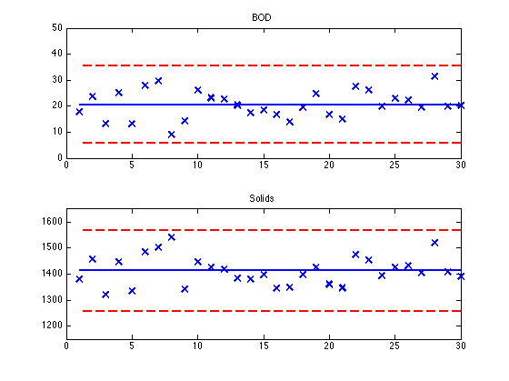
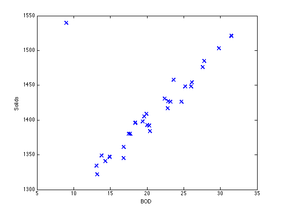

Example 21.5 Fitting Linear Models
File: Ch21_E05.m
Fitting linear relationships to experimental data is one of the basic tools for laboratory data analysis. This script demonstrates a simple approach using Matlab.
Contents
Data
The sample data comes from Example 21.5 of Seborg, et al. The first column is the biological oxygen demand (BOD) and the second column is solids concentration (mg/liter) for a series of daily samples of the effluent of a waste water treatment plant.
data = [ ...
17.7 1380;
23.6 1458;
13.2 1322;
25.2 1448;
13.1 1334;
27.8 1485;
29.8 1503;
9.0 1540;
14.3 1341;
26.0 1448;
23.2 1426;
22.8 1417;
20.4 1384;
17.5 1380;
18.4 1396;
16.8 1345;
13.8 1349;
19.4 1398;
24.7 1426;
16.8 1361;
14.9 1347;
27.6 1476;
26.1 1454;
20.0 1393;
22.9 1427;
22.4 1431;
19.6 1405;
31.5 1521;
19.9 1409;
20.3 1392];
bod.data = data(:,1); solids.data = data(:,2);
Shewhart Charts for BOD
bod.mean = mean(bod.data); bod.std = std(bod.data); bod.UCL = bod.mean + 2.756*bod.std; bod.LCL = bod.mean - 2.756*bod.std;
clf; subplot(2,1,1); N = length(bod.data); plot(1:N,bod.data,'x','Markersize',10,'LineWidth',2); hold on plot(1:N,bod.mean*ones(N,1),'-','LineWidth',2); plot(1:N,bod.UCL*ones(N,1),'r--','LineWidth',2); plot(1:N,bod.LCL*ones(N,1),'r--','LineWidth',2); axis([0 N 0 50]); hold off title('BOD');

solids.mean = mean(solids.data); solids.std = std(solids.data); solids.UCL = solids.mean + 2.756*solids.std; solids.LCL = solids.mean - 2.756*solids.std;
subplot(2,1,2); N = length(solids.data); plot(1:N,solids.data,'x','Markersize',10,'LineWidth',2); hold on plot(1:N,solids.mean*ones(N,1),'-','LineWidth',2); plot(1:N,solids.UCL*ones(N,1),'r--','LineWidth',2); plot(1:N,solids.LCL*ones(N,1),'r--','LineWidth',2); axis([0 N 1150 1650]); hold off title('Solids');
Multivariate Chart
figure(2); plot(bod.data,solids.data,'x','Markersize',10,'LineWidth',2); xlabel('BOD'); ylabel('Solids');
Computing the Covariance Matrix
N = size(data,1); I = size(data,2); X = zeros(N,I); for i = 1:I X(:,i) = data(:,i) - mean(data(:,i)); end S = (1/N)*X'*X;
Hotelling's T
X = [data(:,1)-bod.mean, data(:,2)-solids.mean]; N = size(data,1); for n = 1:N T2(n) = X(n,:)*inv(S)*X(n,:)'; end plot(1:N,T2,'x','Markersize',10,'LineWidth',2); xlabel('Sample Number'); ylabel('T2');